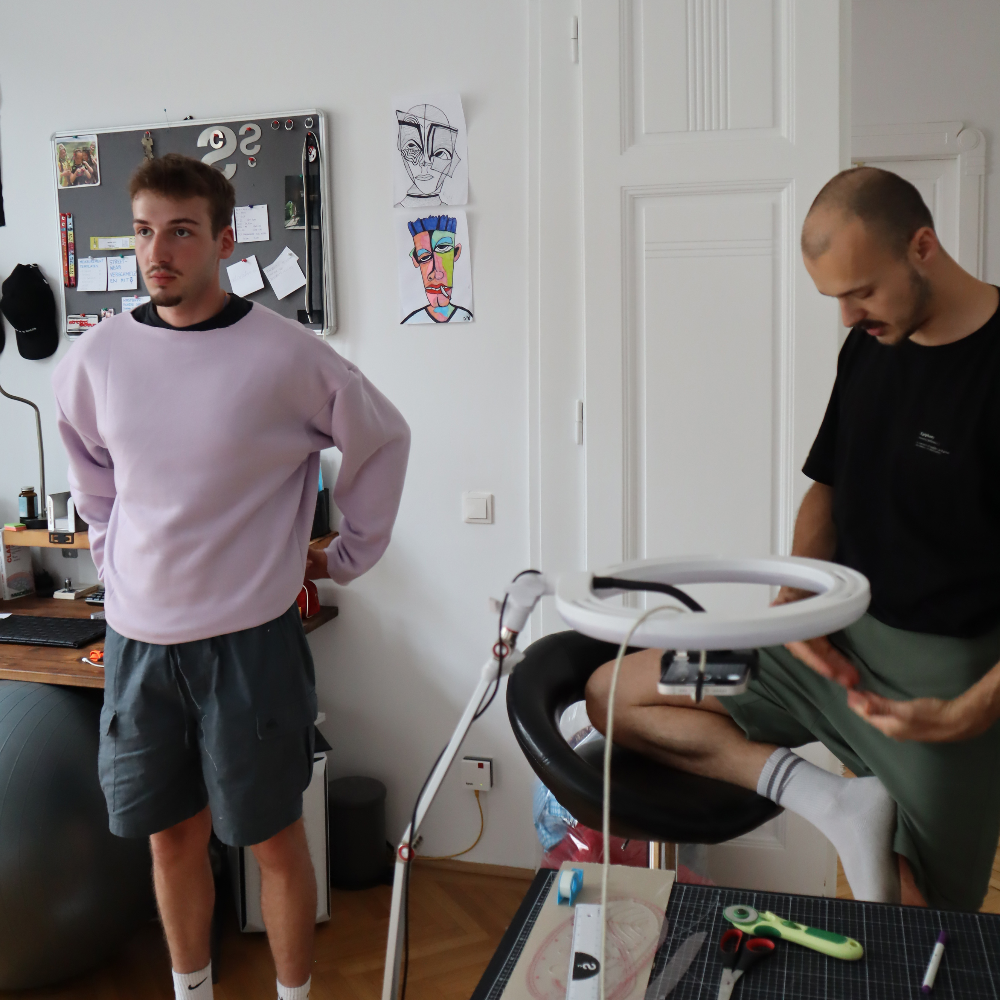
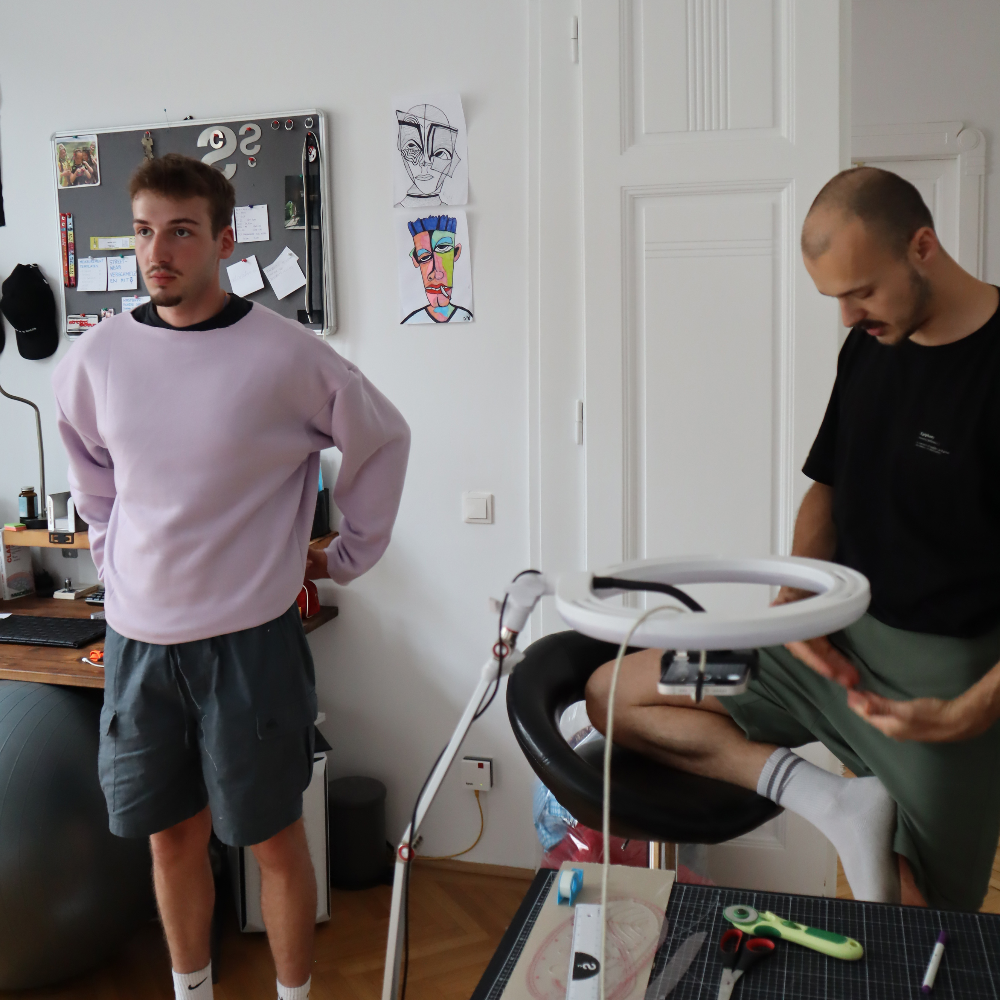

transcribed interview with David - an upcoming artist - who has joined an internship at Structured Chaos in 2024
1. How did you come up with the idea to connect to us, and what attracted you to the brand identity?
"I didn’t actually spend much time focusing on the brand identity initially. It came up in one of my classes about Viennese brands. I reached out and Structured Chaos really caught my attention, especially the butterfly theme."
2. You started with us, and by the second week, you were already creating your own designs. I'm curious about your process and the idea behind them. Had you already worked with the contrasts of structure and chaos, or did that flow naturally into your creative process?
"The thought behind the designs, especially with the faces, was to work with unstructured, angular shapes — playing with those sharp edges. You can see this in especially in 'OTTO' design. The sharp, pointy and uncoordinated elements are meant to represent chaos, something that isn’t smooth or straight. To play with chaotic elements was the main idea driving my designs."
3. What message did you want to convey with your designs? Was there a concrete message, or was it more about expressing creativity?
"Exactly, for me it was about the interplay between angular, unstructured shapes and the soft colors in the designs. The goal was for it to come together harmoniously, blending the harshness of the lines with the softness of the colors. The main message is to balance structure and chaos."
4. What are your favorite designs?
"Out of the faces, I think I like 'Otto' the most — it’s the coolest for me."
5. Would you say that the environment here influenced your work in any way? How did the creative spirit and work atmosphere affect you?
"Yes, absolutely. When you're surrounded by people who are excited about what they’re doing, it’s contagious. You get motivated faster because you see others have a passion for it, and that drives you. And that’s exactly my thing—I love working on creative projects. It really clicked for me."
6. So you didn’t really experience creative blocks? You found your flow quickly?
"Exactly. I only experience creative blocks when I feel trapped or stressed - When I’m stressed, I can’t create. I just sit there, staring at a blank sheet of paper, and nothing happens. But here, the ideas came quickly. I knew pretty early on that I wanted to work with faces, playing around with proportions. So overall, not many creative blocks."
7. After four weeks, do you feel like you've formed a clear picture of the brand identity? Would you say that structure and chaos are something you work with and find inspiring?
"Yes, definitely — especially the idea of chaos theory. The notion that every small detail has a significant impact plays into the faces I created. One eye is slightly lower, one is black, the other is white, and that makes a huge difference."

 
